FinFET 제작 과정과 마스크
FinFET은 마스크를 바꿔 가며 같은 웨이퍼에 모양을 여러 번 새겨서 만듭니다. 마스크가 쓰이는 대표적인 단계를 3D 그림으로 따라갑니다.
마스크는 이렇게 쓰입니다
웨이퍼 위에 감광액(resist)을 바르고 마스크를 통해 빛을 쪼이면, 마스크 모양대로 감광액에 선이나 구멍이 만들어집니다. 이 과정을 리소그래피(litho)라고 합니다.
그 다음 깎아 내는 과정을 식각(etch, RIE)이라고 합니다. 감광액이 덮고 있는 곳은 깎이지 않고, 드러난 곳만 깎입니다.
아래 그림에서 보라색 덩어리는 감광액입니다.
1. fin 만들기
fin은 트랜지스터의 채널이 되는, 웨이퍼 위로 솟은 얇은 실리콘 벽입니다. fin을 만드는 데 마스크가 두 번 쓰입니다.
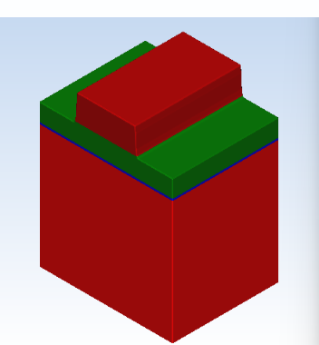
① fin의 틀이 되는 기둥 (mandrel)
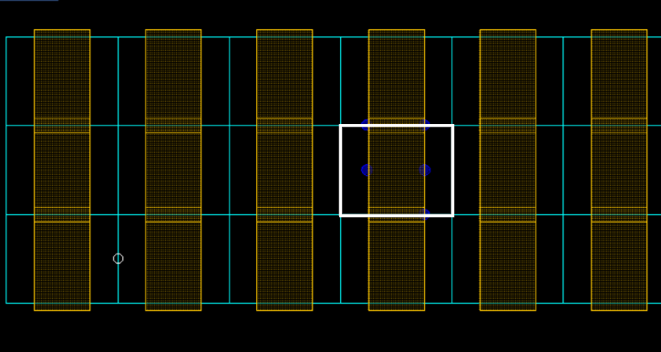
실리콘 웨이퍼 위에 얇은 산화막과 질화막(초록색)을 깔고, 그 위에 비정질 실리콘을 올립니다.
이 비정질 실리콘을 Mand 마스크 모양으로 깎은 것이 그림의 붉은 기둥입니다.
기둥은 fin 자체가 아니라 fin을 만들기 위한 임시 틀입니다.
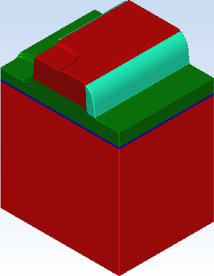
② 기둥 옆면에 spacer 세우기
기둥 위에 산화막(민트색)을 입히고 전체를 깎으면, 기둥 옆면에만 얇은 산화막이 남습니다. 이것이 spacer입니다.
spacer는 마스크 없이 기둥을 따라 저절로 생깁니다. 대신 spacer 자체가 나중에 fin을 깎을 때 가려 주는 마스크 역할을 합니다.
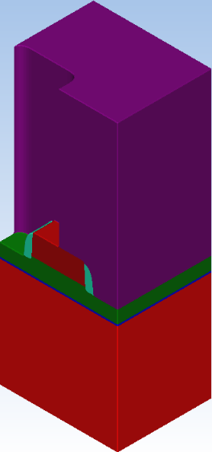
③ 잘라 낼 곳 정하기
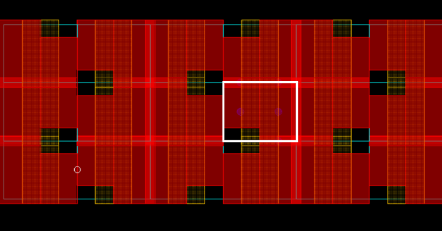
FinCut 마스크는 필요 없는 fin 부분을 잘라 내는 마스크입니다.
감광액이 덮지 않은 곳(그림에서 왼쪽 아래에 기둥과 spacer가 드러난 곳)은 이어지는 식각에서 spacer가 제거됩니다.
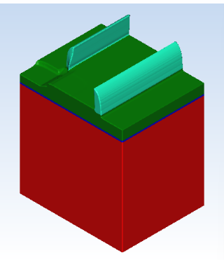
④ 기둥을 없애고 spacer만 남기기
기둥(비정질 실리콘)을 제거하면 spacer만 남습니다.
이 spacer가 아래 실리콘을 깎을 때 가려 주는 마스크 역할을 해서, spacer 아래 부분이 fin으로 남습니다.
기둥 하나에서 spacer가 양옆에 하나씩 생기므로, fin 간격은 기둥 간격의 절반이 됩니다.
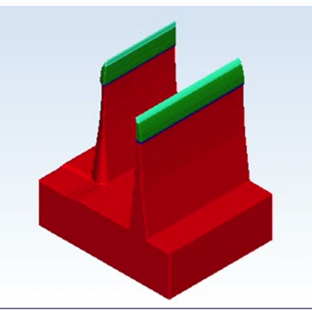
⑤ spacer 아래를 깎아 fin 만들기
spacer를 가리개로 삼아 질화막, 산화막, 실리콘을 차례로 깎으면, spacer 아래 부분이 얇은 벽 모양으로 남습니다. 이것이 fin입니다.
fin 위의 초록색은 질화막입니다.
2. 웰 만들기
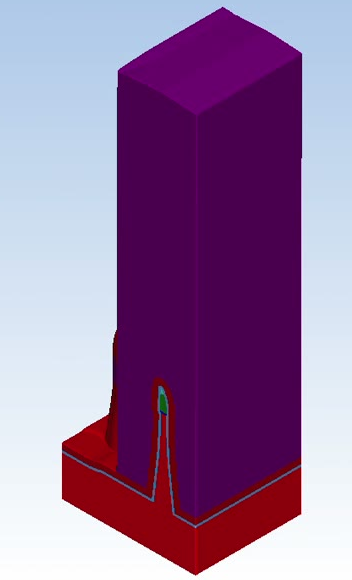
⑥ NWell 마스크로 웰 자리 정하기
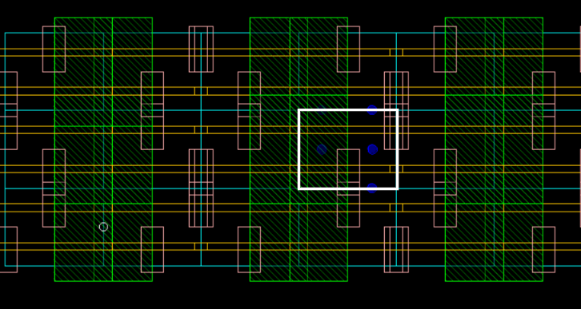
웰(well)은 트랜지스터 아래쪽 실리콘에 불순물을 넣어 만든 영역입니다. NMOS는 P형 웰에, PMOS는 N형 웰에 만듭니다.
먼저 P형 불순물을 공급하는 폴리실리콘막(PSPD poly)을 fin 전체에 입히고, 그 위에 감광액을 덮습니다.
NWell 마스크로 감광액 한쪽을 열면, 그림처럼 한쪽 fin 둘레가 드러납니다. 드러난 쪽이 N웰이 될 자리입니다.
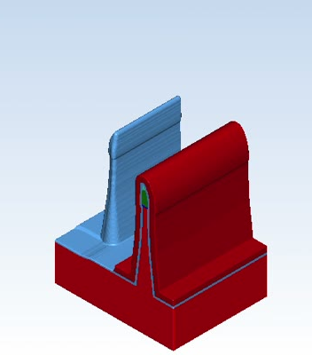
⑦ P웰 쪽에만 PSPD poly 남기기
열린 곳의 PSPD poly를 식각하고 감광액을 벗기면, 오른쪽 fin에만 PSPD poly(빨간색)가 남습니다. 왼쪽 fin은 산화막(파란색)만 보입니다.
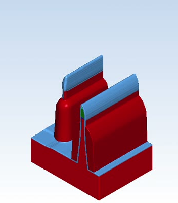
⑧ N웰 쪽에 NSPD poly 입히고 열 가하기
이번에는 N형 불순물을 공급하는 NSPD poly를 입히고 식각해서 반대쪽 fin 둘레에 남깁니다.
그다음 열을 가하면(Well Drive) 불순물이 fin 아래 실리콘으로 퍼져 웰이 됩니다.
⑨ poly에서 fin으로 불순물이 퍼져 웰이 되는 과정
웰은 이온을 쏘아 넣는 이온 주입이 아니라, 불순물이 든 poly 막을 fin에 붙여 두고 열을 가해 불순물을 퍼뜨리는 방식으로 만듭니다.
아래는 fin을 세로로 자른 단면이고, 색은 불순물의 종류와 양입니다. 빨강은 N형, 파랑은 P형, 흰색은 불순물이 거의 없는 곳입니다.
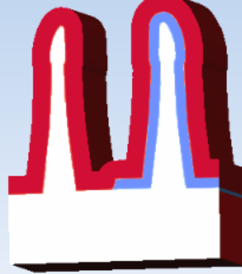
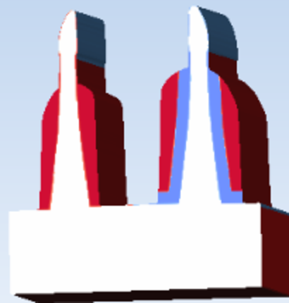
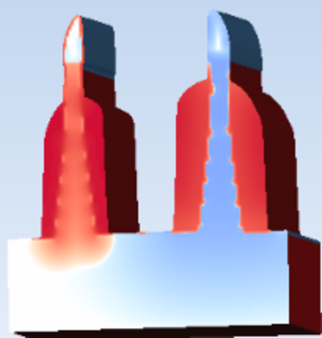
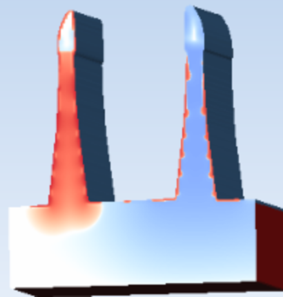
3. STI 만들기
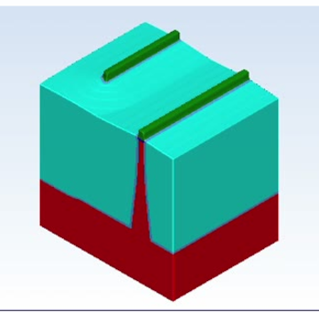
⑩ fin 사이를 산화막(STI)으로 채우기
fin 사이를 산화막(하늘색)으로 채우고 표면을 평평하게 깎아 냅니다. 이 산화막을 STI라고 하며, 이웃한 소자를 전기적으로 떼어 놓는 역할을 합니다.
평평하게 깎으면 fin 위의 질화막(초록색 선)이 드러납니다.
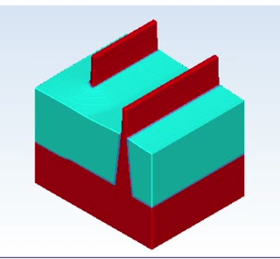
⑪ 산화막을 낮춰 fin 드러내기
fin 위의 질화막을 벗겨 내고, 산화막을 더 깎아 내립니다.
그러면 fin의 윗부분만 산화막 위로 솟아오릅니다. 이 모양이 FinFET의 fin이고, 게이트는 이 fin을 감싸게 됩니다.
4. 게이트 만들기
fin 위에 게이트를 만듭니다. 이 공정의 첫 게이트는 나중에 제거되는 임시 게이트(dummy gate)입니다.

⑫ 게이트 선 만들기
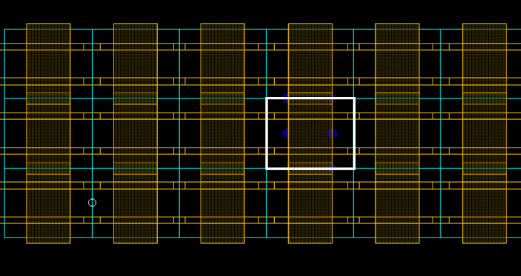
임시 게이트 재료로는 비정질 실리콘을 씁니다.
Gate 마스크로 감광액에 줄무늬를 만들고(그림의 보라색 두 줄), 이 모양대로 아래를 깎으면 게이트 선이 됩니다.
감광액 아래의 여러 겹은 모양을 아래로 정확하게 옮기려고 깐 보조막(ODL, SiARC, 질화막)입니다.
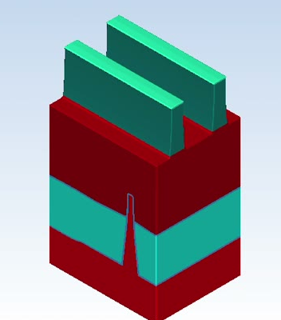
⑬ 게이트 선 모양 확인
Gate 마스크로 깎고 감광액을 벗겨 내면, 위에서 본 줄무늬 모양의 게이트 선이 구조 위에 드러납니다.
이 선은 아직 끊기지 않고 길게 이어져 있습니다.

⑭ 게이트 선 자르기
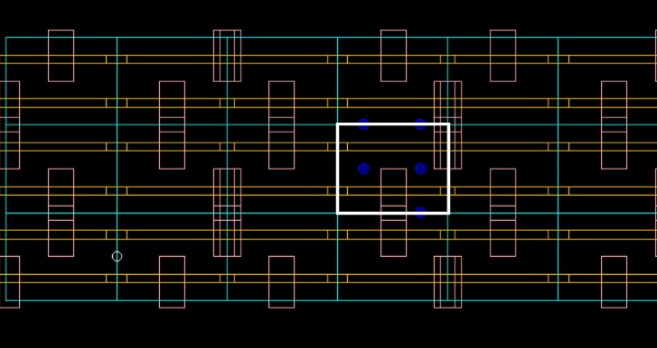
Gate 마스크로 만든 게이트 선은 길게 이어져 있습니다.
GateCut 마스크는 이 선을 원하는 곳에서 끊어서, 서로 다른 트랜지스터의 게이트로 나눕니다.
그림에서 감광액이 오목하게 파인 곳이 끊어질 자리입니다.
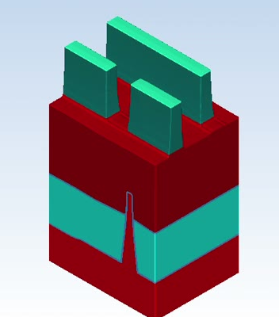
⑮ 잘린 임시 게이트 확인
GateCut으로 깎고 감광액을 벗겨 내면, 길게 이어졌던 임시 게이트(dummy gate)가 끊어진 모양이 드러납니다.
이렇게 나뉜 조각 하나하나가 각각 다른 트랜지스터의 게이트 자리가 됩니다.
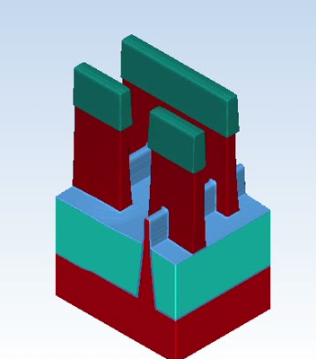
⑯ fin을 감싼 임시 게이트
마지막으로 게이트 선 바깥쪽을 아래까지 식각하면, 임시 게이트(dummy gate)가 fin을 타고 넘어 감싼 모양이 됩니다.
임시 게이트 위의 청록색 막은 이 모양을 깎을 때 쓴 하드마스크입니다.
5. 소스·드레인 만들기
트랜지스터에서 전류가 들어오고 나가는 양쪽 끝이 소스와 드레인입니다. 게이트가 덮지 않은 fin의 양쪽 끝에 만듭니다.
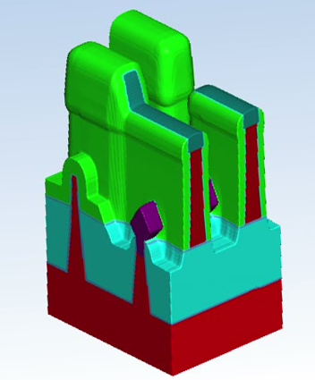
뒷면에서 본 모습 (소스·드레인이 보이도록 다른 그림과 반대쪽에서 본 그림)⑰ PSD: PMOS의 소스·드레인
PSD는 P형 소스·드레인(P-type Source/Drain)이라는 뜻으로, PMOS의 소스와 드레인을 만드는 단계입니다.
초록색 막은 질화막(Si3N4)으로, 게이트의 옆면과 윗면을 덮습니다. 게이트 옆면에 붙은 이 막을 gate spacer라고 합니다.
보라색 덩어리(SiGe)가 PMOS의 소스·드레인입니다. 게이트 양쪽 fin에서 결정을 새로 키워 만듭니다. 이렇게 결정을 키우는 방법을 epi growth(에피 성장)라고 합니다.
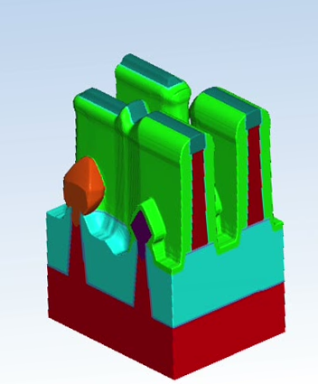
뒷면에서 본 모습⑱ NSD: NMOS의 소스·드레인
NSD는 N형 소스·드레인(N-type Source/Drain)이라는 뜻으로, NMOS의 소스와 드레인을 만드는 단계입니다.
주황색 덩어리(SiC)가 NMOS의 소스·드레인입니다. 앞 그림과 비교하면 주황색이 새로 생겼고, 보라색은 그대로입니다.
6. 금속 게이트로 바꾸기
임시 게이트는 나중에 제거되고, 그 자리에 high-k 절연막(HfOx)과 금속이 들어갑니다. 이 방식을 RMG(Replacement Metal Gate)라고 합니다.
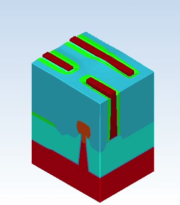
⑲ 임시 게이트 윗면 드러내기
먼저 전체를 산화막(ILD)으로 덮은 뒤 위쪽을 평평하게 깎습니다.
그러면 그림처럼 임시 게이트의 윗면(어두운 빨간 줄)만 산화막 밖으로 드러납니다.
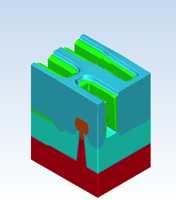
⑳ 임시 게이트 제거
드러난 임시 게이트(dummy gate)를 식각해서 없앱니다.
게이트가 있던 자리는 초록색 spacer 사이의 빈 홈이 됩니다. 이 홈에 high-k 절연막과 금속이 채워집니다.
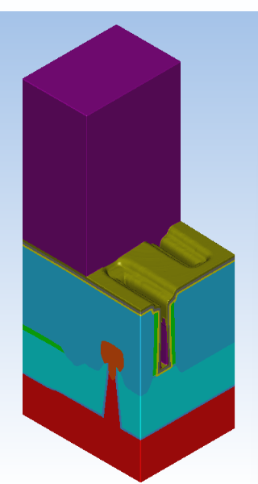
㉑ NMOS 쪽 금속 고르기
NMOS와 PMOS는 게이트 금속이 서로 다릅니다.
NWF 단계에는 ⑥의 NWell 마스크와 같은 마스크를 씁니다. 웰의 위치와 NMOS, PMOS 게이트 금속의 위치가 겹치기 때문입니다.
PMOS용 금속(TiN, TaN)을 입히고, 이 마스크로 식각하고, NMOS용 금속(TiAl)을 입히는 순서입니다.
그림에서 보라색 감광액이 덮지 않은 곳(올리브색 금속이 드러난 곳)이 식각되는 자리입니다.
7. 위쪽 배선과 연결하기
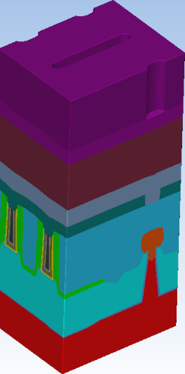
㉒ 위쪽 배선과 잇는 구멍과 홈
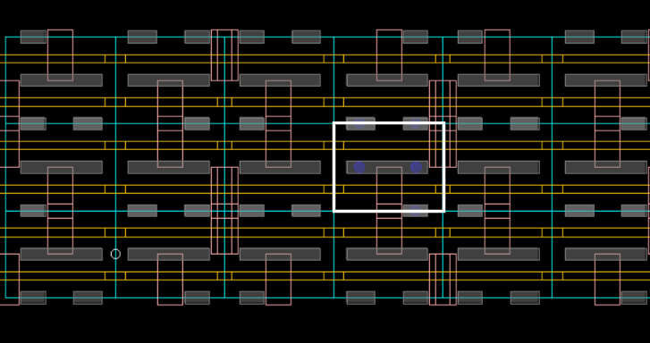
트랜지스터를 다 만들고 나면, 위쪽 배선과 잇기 위해 절연막에 구멍(Contact)과 길쭉한 홈(LI)을 팝니다.
Contact 마스크가 구멍의 위치를, LI 마스크가 홈의 위치를 정합니다. 그림에서는 맨 위 감광액에 길쭉한 홈이 열려 있습니다.
LI(local interconnect)는 짧은 국소 배선입니다. 홈을 판 뒤에는 LI용 Ti를 입힙니다.
레이아웃 색 정리
위 마스크 레이아웃은 위에서 내려다본 모습이고, 색은 레이어를 뜻합니다. 흰색 네모는 왼쪽 3D 구조가 만들어진 자리입니다.
| 색 | 레이어 |
|---|---|
| 주황색 점선 | Fin |
| 빨강 | Active |
| 초록색 빗금 | NWell |
| 분홍색 네모 | GateCut |
| 회색 막대 | LI |
| 파란 점 | Contact |
마스크 정리
리소그래피(LTH) 단계마다 마스크가 쓰입니다. fin부터 LI까지의 마스크는 다음과 같습니다.
| 마스크 | 하는 일 | 위 그림 |
|---|---|---|
| Mand | fin의 틀이 되는 기둥 모양 | ① |
| FinCut | 필요 없는 fin 잘라 내기 | ③ |
| NWell | PMOS가 들어갈 n형 웰 영역 | ⑥ |
| Gate | 게이트 선 모양 | ⑫ |
| GateCut | 게이트 선 끊기 | ⑭ |
| NWF | NMOS 쪽 게이트 금속 영역 (NWell과 같은 마스크) | ㉑ |
| Contact | 위 배선과 잇는 구멍 | ㉒ |
| LI | 짧은 국소 배선 | ㉒ |
그림은 Coventor 공정 시뮬레이터로 만든 FinFET 모델의 단계별 3D 화면입니다.